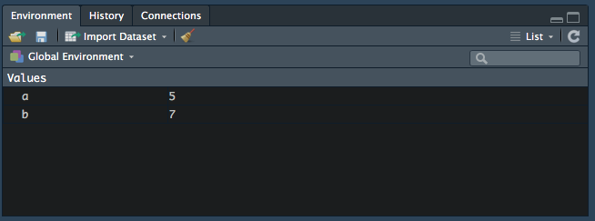
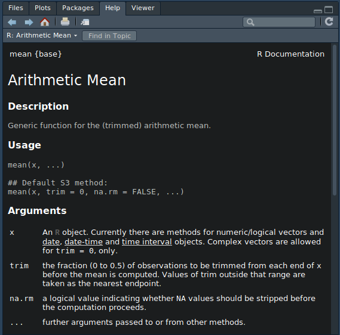

Science des données biologiques I
Réalisé par le service d'Écologie numérique, Université de Mons (Belgique)Objectif
- Découvrir les bases du langage R

Introduction
Regardez la vidéo ci-dessous.
R est un logiciel open source axé sur l’analyse de données. Le langage de programmation R qu’il implémente est mature et développé depuis 1993. Il prend ses sources dans le langage S (spécialement conçu pour les statistiques dans les années 1970). R permet entre autres la manipulation, la visualisation et l’application de calculs statistiques sur des données. C’est l’un des environnements les plus utilisés et les plus puissants pour l’analyse des données. Python est un autre langage très utilisé en science des données, mais il est moins facile à aborder pour un non informaticien. Donc, étudier R sera un investissement clé pour votre future carrière de biologiste, car des données, vous en aurez tous à analyser dans votre travail !
Eléments optionnels : si vous voulez lire une analyse complète et objective (un peu longue, technique et en anglais) qui compare R à d’autres logiciels d’analyse des données, suivez ce lien. Et en voici un autre. Pourquoi R ?, un autre point de vue (toujours en anglais).
Ce tutoriel vous propose une suite d’activités afin d’apprendre les rudiments de R.
R, une calculette scientifique
Vous pouvez tout d’abord employer R comme une calculatrice (ce qui est bien réducteur de la puissance de cet outil). Les opérations de base sont directement utilisables dans R.
| Opération | Symbole | Exemple | Réponse de R |
|---|---|---|---|
| Addition | + |
3 + 2 |
[1] 5 |
| Soustraction | - |
3 - 2 |
[1] 1 |
| Multiplication | * |
3 * 2 |
[1] 6 |
| Division | / |
3 / 2 |
[1] 1.5 |
| Puissance | ^ |
3^2 |
[1] 9 |
A noter :
Les espaces au sein des instructions sont facultatives, mais elles aèrent le code. C’est comme en français : sansespacesonlitnettementmoinsbien! Dans certain cas, il vaut mieux les omettre, comme pour
3^2qui indique que cette opération est prioritaire sur les autres.1 - 3^2signifie1 - (3^2), 3 est d’abord élevé au carré, et puis on soustrait cette valeur à un, et non(1 - 3)^2. De même, la multiplication et la division sont prioritaires sur l’addition et la soustraction tout comme en mathématique.R retourne une réponse précédée de
[1]. Nous verrons plus loin qu’il retourne en réalité un vecteur, même si ce vecteur ne contient qu’un seul élément. Le[1]indique la position dans le vecteur.
Voici un premier exemple d’instruction R tel qu’elle se présente dans les tutoriels (les instructions à rentrer dans R sont présentées dans des cadres gris) suivie de la réponse renvoyée par le logiciel (cadre blanc juste en dessous) :
3 + 2[1] 5À vous maintenant :
- Multipliez les nombres
15et23(un encadré Code R est une zone où vous pouvez vous-même entrer des instructions R et/ou les modifier. Les numéros à gauche sont les numéros de lignes. Ils ne font pas partie des instructions. Utilisez le bouton Run Code pour tester, et ensuite Submit Answer quand vous êtes satisfait de votre réponse).
S’il est présent, le bouton Solution permet de visualiser le code qui est demandé. Essayez toujours de résoudre l’exercice par vous-même. Si vous visualisez la solution, vous perdez automatiquement la moitié des points pour la question !
15 * 23Les learnrs font appel partiellement à des outils de correction automatisée. Les messages qu’ils renvoient sont en anglais. Ne soyez donc pas étonnés du mélange anglais/français parfois. Surtout, si le message est sur fond rouge, lisez-le attentivement : il contient des informations utiles pour corriger votre réponse.
Vous pouvez également utiliser des fonctions mathématiques directement implémentées dans R comme le logarithme népérien avec la fonction log(). Ce langage a été mis au point pour suivre les conventions des mathématiques et des statistiques comme le respect de l’ordre des opérations.
log(4 + 5)[1] 2.197225- Calculez l’exponentielle (fonction
exp()) de23moins15.
Le bouton Hints propose des aides pour vous guider dans l’exercice. Il se peut que la dernière aide soit la solution (cela sera indiqué dans l’aide précédente afin d’éviter de perdre des points en l’affichant de manière malencontreuse). Toute aide affichée fait perdre 10% de la note pour l’exercice. Encore une fois, essayez d’abord de trouver la réponse par vous-même.
# Vous pouvez imbriquer lezs calculs avec les fonctions
# comme vous le faites avec les opérateurs mathématiques
## Attention : solution dans le 'hint' suivant!exp(23 - 15)Les assignations
Effectuer des calculs, c’est bien… pouvoir sauvegarder et réutiliser les résultats, c’est encore mieux. L’action qui consiste à associer un résultat à un nom s’appelle une assignation. L’instruction correspondante dans R symbolise une flèche indiquant le sens de l’assignation (<-, soit l’assemblage du signe plus petit que < et moins -). Par exemple :
a <- 5
b <- 4 + 3
# Réutilisation : addition de la valeur de a et de b
a + b # Somme de a et b[1] 12Notez aussi que tout ce qui suit un dièse (#) sur une même ligne dans R est considéré comme un commentaire. Ce commentaire n’est pas interprété par le programme. Servez-vous en pour documenter vos instructions !
A retenir :
Vous pouvez aussi voir et gérer vos objets dans l’onglet “Environment” de RStudio lorsque plus tard vous travaillerez dans ce logiciel. 
Les noms reconnus par R doivent commencer par une lettre ou le point
., et être suivis de lettres, chiffres, point ou trait souligné_.- Exemple de noms corrects :
a,a1,vec,vec_max,.vec,A. - Exemple de noms incorrects :
1a,_a,vec max,vec-max.
- Exemple de noms corrects :
Évitez d’utiliser des caractères accentués dans les noms.
R fait la différence entre majuscules et minuscules :
xest différent deX. Je répète : R fait la différence entre majuscules et minuscules dans les noms !Un nom commençant par un point sera “caché” (non visible dans l’onglet “Environment” de RStudio).
Utilisez des noms courts, mais représentatifs du contenu de l’objet. Si possible, séparez les mots par un trait souligné et utilisez uniquement des lettres minuscules. On a coutume d’utiliser des noms anglais, car cela facilite l’échange de code avec des collègues internationaux (oui, ça vous arrivera… donc, prenez directement des bonnes habitudes).
- Exemples corrects :
x,v1,initial_date,final_date,elapsed_time. - Exemples incorrects :
toto,Toto2,FinalDate,fdorFDorfi_dat(pour final date),date_finale,laatse_datum.
- Exemples corrects :
A vous de jouer !
Assignez à
ala valeur18.Assignez à
bla division de12par14.Multipliez ensuite
aparb.
# Assignation à a
a <- ___
# Assignation à b
___
# Multiplication de a par b
___# Assignation à a
a <- 18
# Assignation à b
b <- 12 / 14
# Multiplication de a par b
a * bLes aides peuvent être circonstanciées, mais le code que vous écrirez doit correspondre strictement à ce qui est demandé. Quelquefois, des suggestions vous guident et les marques ___ indiquent des zones à compléter dans ces suggestions. Utilisez le bouton Start Over pour revenir à la suggestion de départ à tout moment.
Dans R, et contrairement à une calculatrice de poche, vous pouvez rassembler divers éléments de même nature dans un vecteur. C’est la fonction c() qui s’en charge :
v1 <- c(2, 5, 8, 11, 13, 16)
# NA indique une valeur manquante ('not available')
v2 <- c(2, 5, NA, 11, 13, 16)
# Aussi avec des chaînes de caractères (entre guillemets)
v3 <- c("noir", "jaune", "rouge")Astuce :
- Pour créer un vecteur d’une séquence continue de nombre, tel 2, 3, 4, 5, vous pouvez utiliser l’opérateur
:en plaçant le nombre initial de la série devant et le nombre final derrière.
# La série
c(2, 3, 4, 5)[1] 2 3 4 5# peut s'écrire plus facilement comme ceci
2:5[1] 2 3 4 5# Aussi dans l'autre sens !
5:2[1] 5 4 3 2Vous constatez que R ne renvoie rien en cas d’assignation. C’est un comportement normal. Si vous voulez voir le contenu d’un objet à tout moment, il suffit d’entrer son nom comme instruction. Exemple :
# Entrer le nom d'un objet pour que R vous montre ce qu'il contient
v1[1] 2 5 8 11 13 16Maintenant que vous savez comment réaliser une assignation, à votre tour…
Assignez à
v4les valeurs15,19, une valeur manquante (NA) et13.Assignez à
v5la multiplication dev4par6.Terminez par une instruction pour affichez les valeurs contenues dans
v5.
# Assignation des valeurs à v4
v4 <- ___
# Multipliez v4 par 6 et assignez-le à v5
___
# Affichez le résultat contenu dans v5
___# Assignation des valeurs à v4
v4 <- c(15, 19, NA, 13)
# Multipliez v4 par 6 et assignez-le à v5
v5 <- v4 * 6
# Affichez le résultat contenu dans v5
v5Commentaires :
Les calculs et beaucoup de fonctions sont dits vectorisés dans R. C’est-à-dire que les calculs se répartissent naturellement élément par élément lorsqu’un ou plusieurs vecteurs de longueur supérieure à un sont fournis. Ainsi,
v4 * 6effectue naturellement la multiplication par six à chacun des quatre éléments dev4.Un calcul effectué sur une ou plusieurs valeurs manquantes
NAa lui-même pour résultat une valeur manquanteNA.
Astuce :
- Il est possible de combiner une assignation et l’impression du contenu de l’objet en une seule ligne. Il suffit de mettre l’assignation entre parenthèses :
# Assigner et imprimer le contenu en use seule instruction
(v4 <- c(15, 19, NA, 13))[1] 15 19 NA 13Les fonctions
Les fonctions sont très importantes dans R. C’est elles qui effectuent tous nos calculs. Pour appeler une fonction, on utilise son nom suivi d’une parenthèse, et éventuellement un ou plusieurs arguments fournis à l’intérieur de la parenthèse et séparés par une virgule fun_name(arg1, arg2, ...). Voici un exemple d’une fonction appelée sans argument :
Sys.Date()[1] "2020-09-10"Une autre fonction appelée avec un seul argument :
x <- 1:4
sum(x)[1] 10Pour déterminer les arguments que comprend une fonction, on peut utiliser args() :
args(sum)function (..., na.rm = FALSE)
NULLargs(mean)function (x, ...)
NULLLorsque vous voyez ..., cela signifie que la fonction accepte un nombre variable d’arguments à cet endroit. Sinon, les arguments portent des noms (x dans la fonction mean(), na.rm à l’intérieur de la fonction sum()). Dans la définition de fonction, un argument peut avoir une valeur par défaut. Par exemple dans sum(), na.rm prend la valeur FALSE par défaut. Lorsque c’est le cas, l’argument est facultatif dans l’appel (ne doit pas être indiqué si la valeur par défaut vous convient).
Lors de l’appel d’une fonction, si le nom des arguments n’est pas précisé, R associe les arguments dans l’ordre dans lequel ils sont fournis. Si un nom est donné (argument = valeur) alors, la valeur est associée à l’argument qui porte ce nom, quel que soit l’endroit où il se trouve dans la définition de la fonction. On peut mélanger les deux formes, par exemple, sum(1:4, na.rm = TRUE). Généralement on ne nomme pas le premier ou les deux premiers arguments, mais bien ceux qui suivent.
Piège :
Il existe des fonctions dites génériques qui peuvent prendre différentes formes en fonction de la nature des arguments.
mean()est une fonction générique. Dans ce cas-là,args()ne renvoie pas toujours la totalité des arguments utilisables. Par exemple,mean()accepte aussi l’argumentna.rm. Nous le verrons plus loin.Calculez la moyenne du vecteur
v4en utilisant la fonctionmean().
# Assignation des valeurs à v4
v4 <- c(15, 19, NA, 13)
# Moyenne du vecteur
___# Assignation des valeurs à v4
v4 <- c(15, 19, NA, 13)
# Moyenne du vecteur
mean(v4)Certaines fonctions servent à résumer un ensemble de données, c’est-à-dire qu’elles les représentent avec une seule ou un petit nombre de valeurs. Ainsi, quelle que soit la taille du vecteur v4, sa moyenne est toujours un nombre unique. Ici, nous avons obtenu NA. Nous savons pourquoi. Les valeurs manquantes sont contaminantes dans les calculs. Il en suffit d’une seule pour que l’ensemble du résultat soit NA. Naturellement dans ce cas, c’est dommage, car la moyenne pourrait être estimée sur base des trois autres valeurs connues. L’argument na.rm permet de le faire… mais comment le savoir ? En lisant la page d’aide de la fonction. Pour cela, utilisez l’instruction ? suivi du nom de la fonction. Dans RStudio, la page d’aide apparaît dans l’onglet Help (copie d’écran ci-dessous).
?mean
Dans la section Usage de l’aide, on découvre la forme générique renvoyée par args() plus avant. La méthode par défaut est renseignée ensuite. C’est en fait la forme qui est réellement utilisée dans notre cas. Nous découvrons qu’elle accepte deux arguments supplémentaires : trim et na.rm.
Astuce :
- Dans RStudio, il est encore bien plus facile de placer le curseur sur le nom de la fonction dans le code et d’appuyer sur la touche
F1pour faire apparaître sa page d’aide.
Plus loin dans la page d’aide, on peut lire que l’argument na.rm = détermine si les valeurs manquantes sont éliminées du vecteur avant calcul ou non (“na remove”). Comme vous pouvez le voir dans la page d’aide, cet argument prend la valeur FALSE par défaut. Cela signifie que les valeurs manquantes ne sont pas éliminées par défaut. Mais il est possible d’indiquer na.rm = TRUE pour changer le calcul et obtenir quand même une estimation de moyenne en présence de valeurs manquantes (les constantes TRUE et FALSE, toujours en majuscules, sont les valeurs logiques dans R -objects logical- voulant dire “vrai” ou “faux”).
- Calculez la moyenne du vecteur
v4à nouveau, mais cette fois-ci, en ignorant la valeur manquante dans le calcul.
# Assignation des valeurs à v4
v4 <- c(15, 19, NA, 13)
# Moyenne du vecteur, avec élimination des NAs
___# Assignation des valeurs à v4
v4 <- c(15, 19, NA, 13)
# Moyenne du vecteur, avec élimination des NAs
mean(v4, na.rm = TRUE)Vous obtenez cette fois-ci la réponse souhaitée.
La prise en charge des valeurs manquantes de manière fine est une caractéristique importante de tout logiciel d’analyse de données digne de ce nom. Notez, par exemple, qu’Excel (un logiciel qui traite des tableaux) n’est pas capable de le faire de manière aussi fine que R !
Imbrication et chaînage
Vous pouvez utiliser un appel de fonction partout dans une instruction, à la même place que vous utiliseriez un nom ou une valeur. Par exemple :
x <- 2:5
x_mean <- mean(x)
x_sd <- sd(x) # sd() calcule l'écart type
10 - x_mean / x_sd[1] 7.288912# Le même calcul avec appel de fonctions incluses
10 - mean(x) / sd(x)[1] 7.288912Plus fort, on peut imbriquer des fonctions dans des fonctions :
x <- 2:5
x_mean <- mean(x)
log_x_mean <- log(x_mean)
round(log_x_mean, digits = 3) # Arrondi à la 3ème décimale[1] 1.253# Le même calcul en imbriquant les appels de fonctions
round(log(mean(x)), digits = 3)[1] 1.253Mais dans ce dernier cas, la lecture devient plus difficile. On peut aussi chaîner des instructions avec l’opérateur %>.% dans la version SciViews::R qui charge des “packages” supplémentaires pour fournir des fonctions en plus de R de base :
# Utiliser l'extension SciViews::R
SciViews::R
# Chaîner les calculs mean() -> log() -> round()
x <- 2:5
mean(x) %>.%
log(.) %>.%
round(., digits = 3)[1] 1.253- Le chaînage crée une instruction unique qui effectue un calcul plus complexe, décomposé étape par étape.
- On indique un point
.à la place où le résultat précédent doit être inséré dans la fonction. - Le chaînage est bien plus lisible que l’imbrication au delà de deux niveaux. En effet, si vous lisez l’instruction chaîne à voix haute en disant “ensuite” pour
%>.%cela donne : “je prend la moyenne dexensuite le logarithme, ensuite j’arrondis à trois chiffres derrière la virgule”. C’est parfaitement clair, non ?
Un petit exercice, maintenant :
Créez un vecteur
xqui contient13,19,NAet21,Calculez le logarithme de
x,Ensuite calculez-en la moyenne, en écartant les valeurs manquantes,
Ensuite arrondissez le nombre obtenu à deux décimales
SciViews::R
# Assignation des valeurs à x
x <- c(___)
# Chaînez vos calculs de moyenne du log(x) arrondie à 2 décimales
log(x) ___
___
___SciViews::R
# Assignation des valeurs à x
x <- c(13, 19, NA, 21)
# Chaînez vos calculs de moyenne du log arrondie à 2 décimales
log(x) %>.%
mean(., na.rm = TRUE) %>.%
round(., digits = 2)Conclusion
Bravo ! Vous venez de terminez cette séance d’exercices dans un tutorial “learnr”.
Durant cette séance, vous avez appris à :
- Effectuer des calculs dans R
- Créer des vecteurs et vectoriser vos calculs
- Assigner les résultats à des noms
- Employer des fonctions, préciser leurs arguments et accéder à leurs pages d’aide
- Manipuler les valeurs manquantes, et les calculs en leur présence
- Imbriquer et chaîner des instructions
Cela fait beaucoup de notions à apprendre et retenir d’un seul coup. Mais rassurez-vous, avec la pratique, cela deviendra une habitude. Vous pouvez aussi revenir sur ce tutoriel un peu plus tard pour approfondir votre connaissance des bases du langage R.
Pour aller plus loin…
- Ce tutoriel (en anglais), explique avec plus de détails les fonctions, les arguments et les vecteurs dans R.